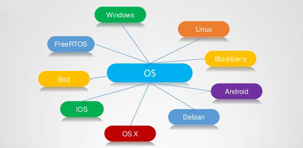
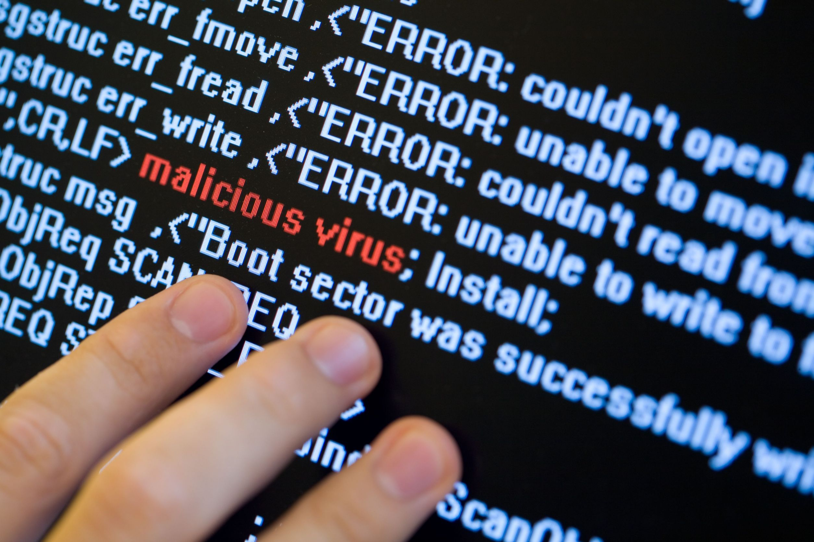

Ivy's Introduction to Computers
Software

Operating System
Role of the OS
Operating system wakes up a computer and provides a basic environment for a user to run the software applications and programs. It runs automatically when the computer is turned on. It is also used when controlling processing and peripherals.
Example
Examples of an operating system are Mac OS, Windows, Unix, Linux, Debian, and BSD (Berkeley Software Distribution). Each of the operating systems have difference features, appearance, and functions.
Utilities
Utilities are software programs that support the computer or other programs by analyzing, configuring, optimizing, and maintaining a computer. For example, there are Anti-virus utility, Data compression utility, File manager, Screensaver, and system profilers (provide information about software installed or hardware attached to the computer.
Applications

Role
A computer application is a computer program designed to perform a specific function or task.
Types / Categories
There is a wide variety of types of application. Word processing and Spreadsheet software, Multimedia software, Presentation Software, Information Worker Software, Educational Software, Simulation Software, Content Access Software, Software for Engineering and Product Development.
Examples
Security
The security of a computer means protection of the computing system or data that it is storing. The damage that could be caused by loss of security can be prevented by good computing practices and technical guards such as anti virus programs.
Malware
Malware is a malicious software that disrupt or disable a device and collects personal informations about a user of the device. It is usually downloaded by the user unintentionally. Anti-virus programs are created to detect the malwares on devices.